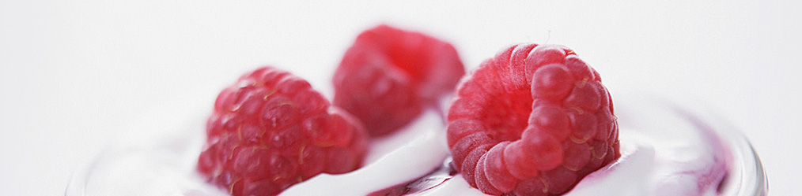

GIỚI THIỆU
CÂU CHUYỆN THƯƠNG HIỆU
Khi dự án "Sửa chua trân châu" được đặt lên bàn, có rất nhiều câu hỏi bùa vây lấy chúng tôi: Lâm sao đề nhân bản một món ăn “đặc sản” nhưng vần đảm bảo chất lượng cho từng sản phâm? Liệu răng đây có phải mô hình phát triên bên vừng hay chỉ là “cơn sốt” hạ nhiệt theo thời gian? Làm thê nảo đê tạo tính khác biệt giữa rất nhiêu thương hiệu? Có muôn vàn khó khăn, thử thách khi xây dựng thương hiệu đê khiên chúng tôi chùn bước. Nhưng chỉ cân một lý do đủ mạnh đê tiếp tục, lý do mà chúng tôi bắt đâu.
THỰC HIỆN ƯỚC MƠ
Anh Phạm Tuấn, được sinh ra trong gia đình có truyền thống làm sửa chua trân châu từ những năm 1990. Món ăn thơm ngon này đã nuôi đường tuôi thơ anh và trở thành niêm nhớ thân thương môi khi anh xa nhà. Không chỉ đôi với riêng anh Tuân, sửa chua trân châu đà len lỏi vào từng ngồ ngách thành phô, trở thành món ăn vặt thân thuộc trong tiêm thức của người dân nơi đây. Đà từ lâu, anh luôn ước mơ nhân bản món ăn này, không chỉ dừng lại ở dài đất chữ S, mà còn vươn ra thị trường quôc tê đê giới thiệu với bạn bẻ năm châu về tỉnh hoa âm thực quê hương. Nhưng ước mơ ây chỉ thật sự bắt đâu khi anh gặp hai người bạn đông hành thân thiết sau này. Anh Lê Thanh và anh Nguyên Minh là hai người bạn thuở thiêu thời. Vào một ngày mùa hè, hai anh có dịp ghé thăm anh Tuân, thưởng thức sửa chua trân châu . Cuộc gặp gờ tình cờ này là khởi nguôn ý tưởng của hệ thông Sửa chua trân châu, mà cho tới giờ hay gọi vui với nhau là “cuộc gặp gỡ ngàn tỷ”. Ba chàng trai trẻ năm ây, dù mới chỉ gặp mà tưởng như đà thân quen từ lâu. Họ cùng chung lý tưởng sông. cùng "phải lòng” với sửa chua trân châu, cùng một ước mơ biên món ăn địa phương này trở thành niềm tự hảo dân tộc.
NHỮNG KHỞI ĐẦU THUẬN LỢI
Khác với nhiều thương hiệu F&B có khởi đầu không mấy dễ đàng. Sửa chua trân châu lại được khách hàng đón nhận và ủng hộ ngay từ khi ra mắt cửa hàng đâu tiên. Chỉ sau hơn 3 tháng phát triển, thương hiệu Sửa chua trân châu đã có trên 30 cửa hàng trên khắp thủ đô và cho đến nay là 250 cửa hàng trên khắp cả nước. Điều gì đã làm nên sự thành công của thương hiệu? Không phải may mắn. Mọi mô hình phát triên bên vững đều xuất phát từ sản phâm. Chúng tôi chọn sữa chua trâu châu, không đơn thuần vì đây là một món ăn truyền thông của gia đình, mà còn bởi sức tiêm năng của sản phâm đã được người dân đón nhận qua hàng chục năm. Bên cạnh đó, đê chuân hoá và nhân bản một sản phâm mất rất nhiêu thời gian, nguồn lực và chỉ phí. Một sai sót nhỏ trong công thức món ăn hay quy trình sản xuất củng có thê phải “đập đi xây lại” từ đâu, Chỉ khi giữ được nguyên bản hương vị, đồng thời, làm giảu hàm lượng dinh dường trong từng sản phẩm, chúng tôi mới đủ tự tin đê giới thiệu đến khách khách hàng. Có lề vì thể. thương hiệu Sửa chua trân châu đã chính phục được tắt cả các khách hàng, tử em bé đến phụ huynh, tử các bạn trẻ đến cả những người lớn tuôi.